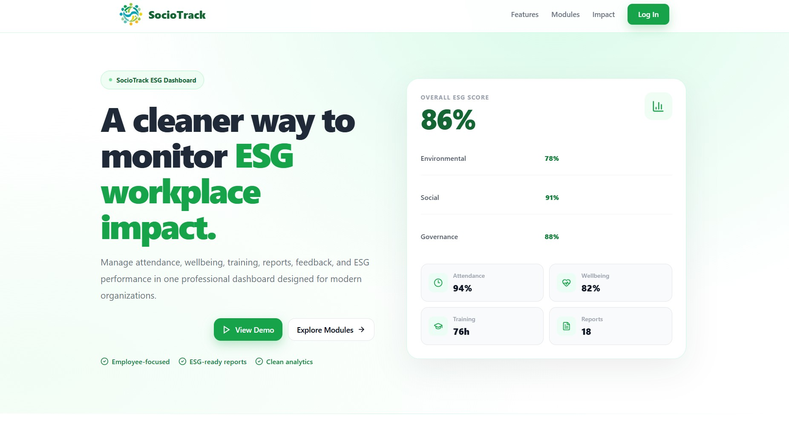

FeaturedFinal Year Project01
SocioTrack ESG Monitoring Application
A web-based ESG social monitoring prototype for SMEs, featuring attendance tracking, wellbeing check-ins, employee reporting, training management, staff access and AI-assisted HR/admin task prioritization.
ReactFirebaseAI IntegrationESG Social Module
View live project